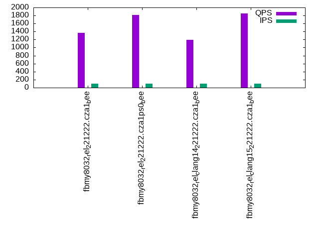

This is a report for the insert benchmark with 20M docs and 1 client(s). It is generated by scripts (bash, awk, sed) and Tufte might not be impressed. An overview of the insert benchmark is here and a short update is here. Below, by DBMS, I mean DBMS+version.config. An example is my8020.c10b40 where my means MySQL, 8020 is version 8.0.20 and c10b40 is the name for the configuration file.
The test server has 8 AMD cores, 16G RAM and an NVMe SSD. It is described here as the Beelink. The benchmark was run with 1 client and there were 1 or 3 connections per client (1 for queries or inserts without rate limits, 1+1 for rate limited inserts+deletes). It uses 1 table. It loads 20M rows per table without secondary indexes, creates 3 secondary indexes per table, then inserts 50m+50m rows per table with a delete per insert to avoid growing the table. It then does 6 read+write tests for 1800s each that do queries as fast as possible with 100,100,500,500,1000,1000 inserts/s and the same for deletes/s per client concurrent with the queries. The database is cached in memory. Clients and the DBMS share one server. The per-database configs are in the per-database subdirectories here.
The tested DBMS are:
The numbers are inserts/s for l.i0, l.i1 and l.i2, indexed docs (or rows) /s for l.x and queries/s for qr100, qp100 thru qr1000, qp1000" The values are the average rate over the entire test for inserts (IPS) and queries (QPS). The range of values for IPS and QPS is split into 3 parts: bottom 25%, middle 50%, top 25%. Values in the bottom 25% have a red background, values in the top 25% have a green background and values in the middle have no color. A gray background is used for values that can be ignored because the DBMS did not sustain the target insert rate. Red backgrounds are not used when the minimum value is within 80% of the max value.
| dbms | l.i0 | l.x | l.i1 | l.i2 | qr100 | qp100 | qr500 | qp500 | qr1000 | qp1000 |
|---|---|---|---|---|---|---|---|---|---|---|
| fbmy8032_rel_221222.cza1_bee | 54945 | 77821 | 22309 | 7752 | 1363 | 2360 | 1362 | 2305 | 1406 | 2334 |
| fbmy8032_rel_221222.cza1ps0_bee | 57637 | 79682 | 23041 | 8285 | 1817 | 2334 | 1376 | 2334 | 1601 | 2358 |
| fbmy8032_rel_clang14_221222.cza1_bee | 54945 | 71685 | 22599 | 7936 | 1198 | 2294 | 1497 | 2335 | 1520 | 2305 |
| fbmy8032_rel_clang15_221222.cza1_bee | 55249 | 71685 | 22949 | 8157 | 1846 | 2309 | 1569 | 2371 | 1494 | 2351 |
This table has relative throughput, throughput for the DBMS relative to the DBMS in the first line, using the absolute throughput from the previous table. Values less than 0.95 have a yellow background. Values greater than 1.05 have a blue background.
| dbms | l.i0 | l.x | l.i1 | l.i2 | qr100 | qp100 | qr500 | qp500 | qr1000 | qp1000 |
|---|---|---|---|---|---|---|---|---|---|---|
| fbmy8032_rel_221222.cza1_bee | 1.00 | 1.00 | 1.00 | 1.00 | 1.00 | 1.00 | 1.00 | 1.00 | 1.00 | 1.00 |
| fbmy8032_rel_221222.cza1ps0_bee | 1.05 | 1.02 | 1.03 | 1.07 | 1.33 | 0.99 | 1.01 | 1.01 | 1.14 | 1.01 |
| fbmy8032_rel_clang14_221222.cza1_bee | 1.00 | 0.92 | 1.01 | 1.02 | 0.88 | 0.97 | 1.10 | 1.01 | 1.08 | 0.99 |
| fbmy8032_rel_clang15_221222.cza1_bee | 1.01 | 0.92 | 1.03 | 1.05 | 1.35 | 0.98 | 1.15 | 1.03 | 1.06 | 1.01 |
This lists the average rate of inserts/s for the tests that do inserts concurrent with queries. For such tests the query rate is listed in the table above. The read+write tests are setup so that the insert rate should match the target rate every second. Cells that are not at least 95% of the target have a red background to indicate a failure to satisfy the target.
| dbms | qr100.L1 | qp100.L2 | qr500.L3 | qp500.L4 | qr1000.L5 | qp1000.L6 |
|---|---|---|---|---|---|---|
| fbmy8032_rel_221222.cza1_bee | 100 | 100 | 499 | 499 | 998 | 998 |
| fbmy8032_rel_221222.cza1ps0_bee | 100 | 100 | 499 | 499 | 998 | 998 |
| fbmy8032_rel_clang14_221222.cza1_bee | 100 | 100 | 499 | 499 | 998 | 998 |
| fbmy8032_rel_clang15_221222.cza1_bee | 100 | 100 | 499 | 499 | 998 | 998 |
| target | 100 | 100 | 500 | 500 | 1000 | 1000 |
l.i0: load without secondary indexes. Graphs for performance per 1-second interval are here.
Average throughput:
Insert response time histogram: each cell has the percentage of responses that take <= the time in the header and max is the max response time in seconds. For the max column values in the top 25% of the range have a red background and in the bottom 25% of the range have a green background. The red background is not used when the min value is within 80% of the max value.
| dbms | 256us | 1ms | 4ms | 16ms | 64ms | 256ms | 1s | 4s | 16s | gt | max |
|---|---|---|---|---|---|---|---|---|---|---|---|
| fbmy8032_rel_221222.cza1_bee | 99.715 | 0.206 | 0.076 | 0.002 | 0.068 | ||||||
| fbmy8032_rel_221222.cza1ps0_bee | 99.722 | 0.203 | 0.072 | 0.002 | 0.071 | ||||||
| fbmy8032_rel_clang14_221222.cza1_bee | 99.715 | 0.208 | 0.074 | 0.003 | 0.070 | ||||||
| fbmy8032_rel_clang15_221222.cza1_bee | 99.716 | 0.207 | 0.075 | 0.002 | 0.074 |
Performance metrics for the DBMS listed above. Some are normalized by throughput, others are not. Legend for results is here.
ips qps rps rmbps wps wmbps rpq rkbpq wpi wkbpi csps cpups cspq cpupq dbgb1 dbgb2 rss maxop p50 p99 tag 54945 0 0 0.0 33.6 10.4 0.000 0.000 0.001 0.194 5920 21.6 0.108 31 0.7 1.9 0.6 0.068 55140 50132 fbmy8032_rel_221222.cza1_bee 57637 0 0 0.0 35.6 11.1 0.000 0.000 0.001 0.197 6185 22.1 0.107 31 0.7 1.9 0.4 0.071 57881 51147 fbmy8032_rel_221222.cza1ps0_bee 54945 0 0 0.0 33.7 10.4 0.000 0.000 0.001 0.194 5916 21.8 0.108 32 0.7 1.9 0.6 0.070 55042 50166 fbmy8032_rel_clang14_221222.cza1_bee 55249 0 0 0.0 33.6 10.5 0.000 0.000 0.001 0.195 5940 21.5 0.108 31 0.7 1.9 0.6 0.074 55443 49246 fbmy8032_rel_clang15_221222.cza1_bee
l.x: create secondary indexes.
Average throughput:
Performance metrics for the DBMS listed above. Some are normalized by throughput, others are not. Legend for results is here.
ips qps rps rmbps wps wmbps rpq rkbpq wpi wkbpi csps cpups cspq cpupq dbgb1 dbgb2 rss maxop p50 p99 tag 77821 0 0 0.0 30.8 12.1 0.000 0.000 0.000 0.160 583 11.8 0.007 12 1.4 2.6 2.0 0.003 NA NA fbmy8032_rel_221222.cza1_bee 79682 0 0 0.0 31.5 12.4 0.000 0.000 0.000 0.159 558 11.8 0.007 12 1.4 2.6 1.8 0.003 NA NA fbmy8032_rel_221222.cza1ps0_bee 71685 0 0 0.0 28.0 11.1 0.000 0.000 0.000 0.158 527 11.9 0.007 13 1.4 2.6 2.1 0.003 NA NA fbmy8032_rel_clang14_221222.cza1_bee 71685 0 0 0.0 27.9 11.1 0.000 0.000 0.000 0.158 553 11.9 0.008 13 1.4 2.6 2.1 0.003 NA NA fbmy8032_rel_clang15_221222.cza1_bee
l.i1: continue load after secondary indexes created with 50 inserts per transaction. Graphs for performance per 1-second interval are here.
Average throughput:
Insert response time histogram: each cell has the percentage of responses that take <= the time in the header and max is the max response time in seconds. For the max column values in the top 25% of the range have a red background and in the bottom 25% of the range have a green background. The red background is not used when the min value is within 80% of the max value.
| dbms | 256us | 1ms | 4ms | 16ms | 64ms | 256ms | 1s | 4s | 16s | gt | max |
|---|---|---|---|---|---|---|---|---|---|---|---|
| fbmy8032_rel_221222.cza1_bee | 99.666 | 0.259 | 0.074 | 0.002 | 0.081 | ||||||
| fbmy8032_rel_221222.cza1ps0_bee | 99.674 | 0.254 | 0.070 | 0.002 | 0.080 | ||||||
| fbmy8032_rel_clang14_221222.cza1_bee | 99.668 | 0.261 | 0.070 | 0.002 | 0.090 | ||||||
| fbmy8032_rel_clang15_221222.cza1_bee | 99.671 | 0.256 | 0.072 | 0.002 | 0.081 |
Delete response time histogram: each cell has the percentage of responses that take <= the time in the header and max is the max response time in seconds. For the max column values in the top 25% of the range have a red background and in the bottom 25% of the range have a green background. The red background is not used when the min value is within 80% of the max value.
| dbms | 256us | 1ms | 4ms | 16ms | 64ms | 256ms | 1s | 4s | 16s | gt | max |
|---|---|---|---|---|---|---|---|---|---|---|---|
| fbmy8032_rel_221222.cza1_bee | 99.652 | 0.265 | 0.081 | 0.002 | 0.079 | ||||||
| fbmy8032_rel_221222.cza1ps0_bee | 99.663 | 0.255 | 0.080 | 0.002 | 0.080 | ||||||
| fbmy8032_rel_clang14_221222.cza1_bee | 99.654 | 0.263 | 0.080 | 0.002 | 0.093 | ||||||
| fbmy8032_rel_clang15_221222.cza1_bee | 99.662 | 0.257 | 0.079 | 0.002 | 0.078 |
Performance metrics for the DBMS listed above. Some are normalized by throughput, others are not. Legend for results is here.
ips qps rps rmbps wps wmbps rpq rkbpq wpi wkbpi csps cpups cspq cpupq dbgb1 dbgb2 rss maxop p50 p99 tag 22309 0 74 0.4 107.5 40.5 0.003 0.019 0.005 1.860 10088 45.8 0.452 164 1.7 3.8 5.3 0.081 22275 20177 fbmy8032_rel_221222.cza1_bee 23041 0 76 0.4 109.7 41.6 0.003 0.019 0.005 1.851 10428 46.0 0.453 160 1.6 3.7 5.0 0.080 22975 20627 fbmy8032_rel_221222.cza1ps0_bee 22599 0 74 0.4 109.2 41.3 0.003 0.019 0.005 1.870 10252 45.9 0.454 162 1.9 4.0 5.3 0.090 22532 20378 fbmy8032_rel_clang14_221222.cza1_bee 22949 0 76 0.4 109.0 41.2 0.003 0.019 0.005 1.839 10376 46.1 0.452 161 1.8 3.9 5.4 0.081 22875 20696 fbmy8032_rel_clang15_221222.cza1_bee
l.i2: continue load after secondary indexes created with 5 inserts per transaction. Graphs for performance per 1-second interval are here.
Average throughput:
Insert response time histogram: each cell has the percentage of responses that take <= the time in the header and max is the max response time in seconds. For the max column values in the top 25% of the range have a red background and in the bottom 25% of the range have a green background. The red background is not used when the min value is within 80% of the max value.
| dbms | 256us | 1ms | 4ms | 16ms | 64ms | 256ms | 1s | 4s | 16s | gt | max |
|---|---|---|---|---|---|---|---|---|---|---|---|
| fbmy8032_rel_221222.cza1_bee | 99.802 | 0.113 | 0.082 | 0.002 | nonzero | 0.068 | |||||
| fbmy8032_rel_221222.cza1ps0_bee | 99.850 | 0.069 | 0.078 | 0.003 | nonzero | 0.075 | |||||
| fbmy8032_rel_clang14_221222.cza1_bee | 99.816 | 0.101 | 0.080 | 0.003 | nonzero | 0.079 | |||||
| fbmy8032_rel_clang15_221222.cza1_bee | 99.843 | 0.075 | 0.079 | 0.003 | nonzero | 0.068 |
Delete response time histogram: each cell has the percentage of responses that take <= the time in the header and max is the max response time in seconds. For the max column values in the top 25% of the range have a red background and in the bottom 25% of the range have a green background. The red background is not used when the min value is within 80% of the max value.
| dbms | 256us | 1ms | 4ms | 16ms | 64ms | 256ms | 1s | 4s | 16s | gt | max |
|---|---|---|---|---|---|---|---|---|---|---|---|
| fbmy8032_rel_221222.cza1_bee | 99.761 | 0.152 | 0.084 | 0.002 | nonzero | 0.071 | |||||
| fbmy8032_rel_221222.cza1ps0_bee | 99.824 | 0.093 | 0.079 | 0.004 | 0.064 | ||||||
| fbmy8032_rel_clang14_221222.cza1_bee | 99.771 | 0.143 | 0.082 | 0.003 | nonzero | 0.070 | |||||
| fbmy8032_rel_clang15_221222.cza1_bee | 99.805 | 0.111 | 0.081 | 0.003 | nonzero | 0.074 |
Performance metrics for the DBMS listed above. Some are normalized by throughput, others are not. Legend for results is here.
ips qps rps rmbps wps wmbps rpq rkbpq wpi wkbpi csps cpups cspq cpupq dbgb1 dbgb2 rss maxop p50 p99 tag 7752 0 0 0.0 96.8 35.0 0.000 0.000 0.012 4.620 32579 42.8 4.203 442 1.5 1.8 7.5 0.068 7737 6766 fbmy8032_rel_221222.cza1_bee 8285 0 0 0.0 102.9 37.6 0.000 0.000 0.012 4.650 34509 43.7 4.165 422 1.6 1.8 7.4 0.075 8260 7177 fbmy8032_rel_221222.cza1ps0_bee 7936 0 0 0.0 98.3 35.9 0.000 0.000 0.012 4.632 33128 43.1 4.174 434 1.5 1.7 7.6 0.079 7936 7060 fbmy8032_rel_clang14_221222.cza1_bee 8157 0 0 0.0 102.9 37.3 0.000 0.000 0.013 4.682 33759 44.0 4.139 432 1.7 1.9 7.7 0.068 8139 7047 fbmy8032_rel_clang15_221222.cza1_bee
qr100.L1: range queries with 100 insert/s per client. Graphs for performance per 1-second interval are here.
Average throughput:
Query response time histogram: each cell has the percentage of responses that take <= the time in the header and max is the max response time in seconds. For max values in the top 25% of the range have a red background and in the bottom 25% of the range have a green background. The red background is not used when the min value is within 80% of the max value.
| dbms | 256us | 1ms | 4ms | 16ms | 64ms | 256ms | 1s | 4s | 16s | gt | max |
|---|---|---|---|---|---|---|---|---|---|---|---|
| fbmy8032_rel_221222.cza1_bee | 7.531 | 70.656 | 21.813 | nonzero | 0.014 | ||||||
| fbmy8032_rel_221222.cza1ps0_bee | 14.722 | 75.677 | 9.602 | nonzero | 0.004 | ||||||
| fbmy8032_rel_clang14_221222.cza1_bee | 5.095 | 72.904 | 22.001 | nonzero | nonzero | 0.025 | |||||
| fbmy8032_rel_clang15_221222.cza1_bee | 9.589 | 82.965 | 7.446 | nonzero | 0.005 |
Insert response time histogram: each cell has the percentage of responses that take <= the time in the header and max is the max response time in seconds. For max values in the top 25% of the range have a red background and in the bottom 25% of the range have a green background. The red background is not used when the min value is within 80% of the max value.
| dbms | 256us | 1ms | 4ms | 16ms | 64ms | 256ms | 1s | 4s | 16s | gt | max |
|---|---|---|---|---|---|---|---|---|---|---|---|
| fbmy8032_rel_221222.cza1_bee | 99.389 | 0.556 | 0.056 | 0.018 | |||||||
| fbmy8032_rel_221222.cza1ps0_bee | 99.583 | 0.361 | 0.056 | 0.018 | |||||||
| fbmy8032_rel_clang14_221222.cza1_bee | 99.472 | 0.472 | 0.056 | 0.020 | |||||||
| fbmy8032_rel_clang15_221222.cza1_bee | 99.361 | 0.583 | 0.056 | 0.018 |
Delete response time histogram: each cell has the percentage of responses that take <= the time in the header and max is the max response time in seconds. For max values in the top 25% of the range have a red background and in the bottom 25% of the range have a green background. The red background is not used when the min value is within 80% of the max value.
| dbms | 256us | 1ms | 4ms | 16ms | 64ms | 256ms | 1s | 4s | 16s | gt | max |
|---|---|---|---|---|---|---|---|---|---|---|---|
| fbmy8032_rel_221222.cza1_bee | 99.500 | 0.472 | 0.028 | 0.018 | |||||||
| fbmy8032_rel_221222.cza1ps0_bee | 99.694 | 0.278 | 0.028 | 0.018 | |||||||
| fbmy8032_rel_clang14_221222.cza1_bee | 99.639 | 0.333 | 0.028 | 0.019 | |||||||
| fbmy8032_rel_clang15_221222.cza1_bee | 99.528 | 0.444 | 0.028 | 0.017 |
Performance metrics for the DBMS listed above. Some are normalized by throughput, others are not. Legend for results is here.
ips qps rps rmbps wps wmbps rpq rkbpq wpi wkbpi csps cpups cspq cpupq dbgb1 dbgb2 rss maxop p50 p99 tag 100 1363 0 0.0 4.2 0.4 0.000 0.000 0.042 4.038 5687 12.6 4.172 739 1.5 1.7 7.8 0.014 1359 1246 fbmy8032_rel_221222.cza1_bee 100 1817 0 0.0 4.1 0.3 0.000 0.000 0.041 3.560 7410 12.3 4.077 541 1.5 1.7 7.6 0.004 1822 1519 fbmy8032_rel_221222.cza1ps0_bee 100 1198 0 0.0 3.9 0.3 0.000 0.000 0.039 2.984 5055 12.5 4.219 835 1.5 1.7 7.9 0.025 1199 1102 fbmy8032_rel_clang14_221222.cza1_bee 100 1846 0 0.0 4.4 0.4 0.000 0.000 0.044 4.263 7530 12.8 4.079 555 1.5 1.7 7.9 0.005 1807 1374 fbmy8032_rel_clang15_221222.cza1_bee
qp100.L2: point queries with 100 insert/s per client. Graphs for performance per 1-second interval are here.
Average throughput:
Query response time histogram: each cell has the percentage of responses that take <= the time in the header and max is the max response time in seconds. For max values in the top 25% of the range have a red background and in the bottom 25% of the range have a green background. The red background is not used when the min value is within 80% of the max value.
| dbms | 256us | 1ms | 4ms | 16ms | 64ms | 256ms | 1s | 4s | 16s | gt | max |
|---|---|---|---|---|---|---|---|---|---|---|---|
| fbmy8032_rel_221222.cza1_bee | 99.994 | 0.005 | 0.001 | 0.010 | |||||||
| fbmy8032_rel_221222.cza1ps0_bee | nonzero | 99.996 | 0.003 | 0.003 | |||||||
| fbmy8032_rel_clang14_221222.cza1_bee | nonzero | 99.993 | 0.006 | 0.001 | 0.010 | ||||||
| fbmy8032_rel_clang15_221222.cza1_bee | nonzero | 99.991 | 0.008 | 0.001 | 0.011 |
Insert response time histogram: each cell has the percentage of responses that take <= the time in the header and max is the max response time in seconds. For max values in the top 25% of the range have a red background and in the bottom 25% of the range have a green background. The red background is not used when the min value is within 80% of the max value.
| dbms | 256us | 1ms | 4ms | 16ms | 64ms | 256ms | 1s | 4s | 16s | gt | max |
|---|---|---|---|---|---|---|---|---|---|---|---|
| fbmy8032_rel_221222.cza1_bee | 99.639 | 0.278 | 0.083 | 0.018 | |||||||
| fbmy8032_rel_221222.cza1ps0_bee | 99.306 | 0.611 | 0.083 | 0.018 | |||||||
| fbmy8032_rel_clang14_221222.cza1_bee | 99.472 | 0.472 | 0.056 | 0.018 | |||||||
| fbmy8032_rel_clang15_221222.cza1_bee | 99.444 | 0.500 | 0.056 | 0.018 |
Delete response time histogram: each cell has the percentage of responses that take <= the time in the header and max is the max response time in seconds. For max values in the top 25% of the range have a red background and in the bottom 25% of the range have a green background. The red background is not used when the min value is within 80% of the max value.
| dbms | 256us | 1ms | 4ms | 16ms | 64ms | 256ms | 1s | 4s | 16s | gt | max |
|---|---|---|---|---|---|---|---|---|---|---|---|
| fbmy8032_rel_221222.cza1_bee | 99.722 | 0.222 | 0.056 | 0.018 | |||||||
| fbmy8032_rel_221222.cza1ps0_bee | 99.417 | 0.528 | 0.056 | 0.018 | |||||||
| fbmy8032_rel_clang14_221222.cza1_bee | 99.611 | 0.333 | 0.056 | 0.018 | |||||||
| fbmy8032_rel_clang15_221222.cza1_bee | 99.528 | 0.417 | 0.056 | 0.018 |
Performance metrics for the DBMS listed above. Some are normalized by throughput, others are not. Legend for results is here.
ips qps rps rmbps wps wmbps rpq rkbpq wpi wkbpi csps cpups cspq cpupq dbgb1 dbgb2 rss maxop p50 p99 tag 100 2360 5 0.0 3.9 0.3 0.002 0.013 0.040 3.504 10218 13.4 4.329 454 1.5 1.8 8.6 0.010 2334 1966 fbmy8032_rel_221222.cza1_bee 100 2334 0 0.0 4.2 0.4 0.000 0.000 0.042 4.342 9886 13.3 4.235 456 1.5 1.8 8.4 0.003 2221 2061 fbmy8032_rel_221222.cza1ps0_bee 100 2294 9 0.1 4.0 0.3 0.004 0.024 0.040 3.295 9726 13.4 4.240 467 1.5 1.8 8.6 0.010 2269 1901 fbmy8032_rel_clang14_221222.cza1_bee 100 2309 17 0.1 4.0 0.3 0.007 0.047 0.041 3.548 9807 13.4 4.247 464 1.5 1.8 8.7 0.011 2286 1902 fbmy8032_rel_clang15_221222.cza1_bee
qr500.L3: range queries with 500 insert/s per client. Graphs for performance per 1-second interval are here.
Average throughput:
Query response time histogram: each cell has the percentage of responses that take <= the time in the header and max is the max response time in seconds. For max values in the top 25% of the range have a red background and in the bottom 25% of the range have a green background. The red background is not used when the min value is within 80% of the max value.
| dbms | 256us | 1ms | 4ms | 16ms | 64ms | 256ms | 1s | 4s | 16s | gt | max |
|---|---|---|---|---|---|---|---|---|---|---|---|
| fbmy8032_rel_221222.cza1_bee | 7.828 | 71.945 | 20.226 | nonzero | nonzero | 0.033 | |||||
| fbmy8032_rel_221222.cza1ps0_bee | 12.385 | 57.137 | 30.477 | nonzero | nonzero | 0.031 | |||||
| fbmy8032_rel_clang14_221222.cza1_bee | 7.803 | 72.880 | 19.315 | 0.001 | nonzero | 0.030 | |||||
| fbmy8032_rel_clang15_221222.cza1_bee | 7.801 | 67.567 | 24.631 | nonzero | nonzero | 0.029 |
Insert response time histogram: each cell has the percentage of responses that take <= the time in the header and max is the max response time in seconds. For max values in the top 25% of the range have a red background and in the bottom 25% of the range have a green background. The red background is not used when the min value is within 80% of the max value.
| dbms | 256us | 1ms | 4ms | 16ms | 64ms | 256ms | 1s | 4s | 16s | gt | max |
|---|---|---|---|---|---|---|---|---|---|---|---|
| fbmy8032_rel_221222.cza1_bee | 99.550 | 0.367 | 0.083 | 0.018 | |||||||
| fbmy8032_rel_221222.cza1ps0_bee | 99.544 | 0.367 | 0.089 | 0.025 | |||||||
| fbmy8032_rel_clang14_221222.cza1_bee | 99.567 | 0.356 | 0.078 | 0.018 | |||||||
| fbmy8032_rel_clang15_221222.cza1_bee | 99.522 | 0.394 | 0.083 | 0.018 |
Delete response time histogram: each cell has the percentage of responses that take <= the time in the header and max is the max response time in seconds. For max values in the top 25% of the range have a red background and in the bottom 25% of the range have a green background. The red background is not used when the min value is within 80% of the max value.
| dbms | 256us | 1ms | 4ms | 16ms | 64ms | 256ms | 1s | 4s | 16s | gt | max |
|---|---|---|---|---|---|---|---|---|---|---|---|
| fbmy8032_rel_221222.cza1_bee | 99.561 | 0.361 | 0.078 | 0.018 | |||||||
| fbmy8032_rel_221222.cza1ps0_bee | 99.594 | 0.322 | 0.083 | 0.024 | |||||||
| fbmy8032_rel_clang14_221222.cza1_bee | 99.594 | 0.328 | 0.078 | 0.023 | |||||||
| fbmy8032_rel_clang15_221222.cza1_bee | 99.578 | 0.350 | 0.072 | 0.018 |
Performance metrics for the DBMS listed above. Some are normalized by throughput, others are not. Legend for results is here.
ips qps rps rmbps wps wmbps rpq rkbpq wpi wkbpi csps cpups cspq cpupq dbgb1 dbgb2 rss maxop p50 p99 tag 499 1362 0 0.0 8.9 2.4 0.000 0.000 0.018 4.844 5826 13.6 4.278 799 1.5 2.0 8.8 0.033 1390 1071 fbmy8032_rel_221222.cza1_bee 499 1376 0 0.0 8.8 2.3 0.000 0.000 0.018 4.687 5878 13.4 4.272 779 1.5 2.0 8.5 0.031 1374 1135 fbmy8032_rel_221222.cza1ps0_bee 499 1497 0 0.0 9.0 2.4 0.000 0.000 0.018 4.829 6334 13.6 4.232 727 1.5 1.9 8.9 0.030 1485 1007 fbmy8032_rel_clang14_221222.cza1_bee 499 1569 0 0.0 9.0 2.3 0.000 0.000 0.018 4.700 6614 13.5 4.216 688 1.5 2.0 8.8 0.029 1550 1279 fbmy8032_rel_clang15_221222.cza1_bee
qp500.L4: point queries with 500 insert/s per client. Graphs for performance per 1-second interval are here.
Average throughput:
Query response time histogram: each cell has the percentage of responses that take <= the time in the header and max is the max response time in seconds. For max values in the top 25% of the range have a red background and in the bottom 25% of the range have a green background. The red background is not used when the min value is within 80% of the max value.
| dbms | 256us | 1ms | 4ms | 16ms | 64ms | 256ms | 1s | 4s | 16s | gt | max |
|---|---|---|---|---|---|---|---|---|---|---|---|
| fbmy8032_rel_221222.cza1_bee | 99.993 | 0.007 | nonzero | 0.006 | |||||||
| fbmy8032_rel_221222.cza1ps0_bee | 0.002 | 99.993 | 0.005 | 0.003 | |||||||
| fbmy8032_rel_clang14_221222.cza1_bee | 99.994 | 0.006 | nonzero | 0.006 | |||||||
| fbmy8032_rel_clang15_221222.cza1_bee | 99.994 | 0.006 | nonzero | 0.006 |
Insert response time histogram: each cell has the percentage of responses that take <= the time in the header and max is the max response time in seconds. For max values in the top 25% of the range have a red background and in the bottom 25% of the range have a green background. The red background is not used when the min value is within 80% of the max value.
| dbms | 256us | 1ms | 4ms | 16ms | 64ms | 256ms | 1s | 4s | 16s | gt | max |
|---|---|---|---|---|---|---|---|---|---|---|---|
| fbmy8032_rel_221222.cza1_bee | 99.694 | 0.217 | 0.089 | 0.018 | |||||||
| fbmy8032_rel_221222.cza1ps0_bee | 99.722 | 0.194 | 0.083 | 0.018 | |||||||
| fbmy8032_rel_clang14_221222.cza1_bee | 99.489 | 0.439 | 0.072 | 0.018 | |||||||
| fbmy8032_rel_clang15_221222.cza1_bee | 99.544 | 0.372 | 0.083 | 0.018 |
Delete response time histogram: each cell has the percentage of responses that take <= the time in the header and max is the max response time in seconds. For max values in the top 25% of the range have a red background and in the bottom 25% of the range have a green background. The red background is not used when the min value is within 80% of the max value.
| dbms | 256us | 1ms | 4ms | 16ms | 64ms | 256ms | 1s | 4s | 16s | gt | max |
|---|---|---|---|---|---|---|---|---|---|---|---|
| fbmy8032_rel_221222.cza1_bee | 99.711 | 0.200 | 0.089 | 0.018 | |||||||
| fbmy8032_rel_221222.cza1ps0_bee | 99.717 | 0.200 | 0.083 | 0.039 | |||||||
| fbmy8032_rel_clang14_221222.cza1_bee | 99.572 | 0.367 | 0.061 | 0.018 | |||||||
| fbmy8032_rel_clang15_221222.cza1_bee | 99.572 | 0.350 | 0.078 | 0.018 |
Performance metrics for the DBMS listed above. Some are normalized by throughput, others are not. Legend for results is here.
ips qps rps rmbps wps wmbps rpq rkbpq wpi wkbpi csps cpups cspq cpupq dbgb1 dbgb2 rss maxop p50 p99 tag 499 2305 0 0.0 8.1 2.2 0.000 0.000 0.016 4.441 9898 14.8 4.295 514 1.5 2.2 9.0 0.006 2301 1918 fbmy8032_rel_221222.cza1_bee 499 2334 0 0.0 8.2 2.2 0.000 0.000 0.016 4.517 10019 14.9 4.292 511 1.5 2.2 8.9 0.003 2222 2045 fbmy8032_rel_221222.cza1ps0_bee 499 2335 0 0.0 8.2 2.2 0.000 0.000 0.016 4.550 10013 14.7 4.288 504 1.5 2.1 8.9 0.006 2302 1919 fbmy8032_rel_clang14_221222.cza1_bee 499 2371 0 0.0 8.4 2.2 0.000 0.000 0.017 4.610 10157 14.8 4.284 499 1.5 2.2 9.0 0.006 2365 1934 fbmy8032_rel_clang15_221222.cza1_bee
qr1000.L5: range queries with 1000 insert/s per client. Graphs for performance per 1-second interval are here.
Average throughput:
Query response time histogram: each cell has the percentage of responses that take <= the time in the header and max is the max response time in seconds. For max values in the top 25% of the range have a red background and in the bottom 25% of the range have a green background. The red background is not used when the min value is within 80% of the max value.
| dbms | 256us | 1ms | 4ms | 16ms | 64ms | 256ms | 1s | 4s | 16s | gt | max |
|---|---|---|---|---|---|---|---|---|---|---|---|
| fbmy8032_rel_221222.cza1_bee | 7.966 | 70.949 | 21.083 | 0.001 | 0.001 | 0.031 | |||||
| fbmy8032_rel_221222.cza1ps0_bee | 13.262 | 66.910 | 19.827 | nonzero | 0.001 | 0.033 | |||||
| fbmy8032_rel_clang14_221222.cza1_bee | 6.719 | 73.628 | 19.652 | nonzero | nonzero | 0.031 | |||||
| fbmy8032_rel_clang15_221222.cza1_bee | 7.765 | 69.389 | 22.846 | nonzero | nonzero | 0.032 |
Insert response time histogram: each cell has the percentage of responses that take <= the time in the header and max is the max response time in seconds. For max values in the top 25% of the range have a red background and in the bottom 25% of the range have a green background. The red background is not used when the min value is within 80% of the max value.
| dbms | 256us | 1ms | 4ms | 16ms | 64ms | 256ms | 1s | 4s | 16s | gt | max |
|---|---|---|---|---|---|---|---|---|---|---|---|
| fbmy8032_rel_221222.cza1_bee | 99.550 | 0.375 | 0.075 | 0.042 | |||||||
| fbmy8032_rel_221222.cza1ps0_bee | 99.617 | 0.303 | 0.081 | 0.051 | |||||||
| fbmy8032_rel_clang14_221222.cza1_bee | 99.597 | 0.322 | 0.081 | 0.047 | |||||||
| fbmy8032_rel_clang15_221222.cza1_bee | 99.586 | 0.333 | 0.081 | 0.049 |
Delete response time histogram: each cell has the percentage of responses that take <= the time in the header and max is the max response time in seconds. For max values in the top 25% of the range have a red background and in the bottom 25% of the range have a green background. The red background is not used when the min value is within 80% of the max value.
| dbms | 256us | 1ms | 4ms | 16ms | 64ms | 256ms | 1s | 4s | 16s | gt | max |
|---|---|---|---|---|---|---|---|---|---|---|---|
| fbmy8032_rel_221222.cza1_bee | 99.583 | 0.347 | 0.069 | 0.056 | |||||||
| fbmy8032_rel_221222.cza1ps0_bee | 99.653 | 0.272 | 0.075 | 0.043 | |||||||
| fbmy8032_rel_clang14_221222.cza1_bee | 99.600 | 0.319 | 0.081 | 0.039 | |||||||
| fbmy8032_rel_clang15_221222.cza1_bee | 99.614 | 0.314 | 0.072 | 0.047 |
Performance metrics for the DBMS listed above. Some are normalized by throughput, others are not. Legend for results is here.
ips qps rps rmbps wps wmbps rpq rkbpq wpi wkbpi csps cpups cspq cpupq dbgb1 dbgb2 rss maxop p50 p99 tag 998 1406 9 0.0 14.2 4.7 0.006 0.034 0.014 4.803 6255 15.5 4.448 882 1.7 2.8 9.0 0.031 1374 975 fbmy8032_rel_221222.cza1_bee 998 1601 0 0.0 14.1 4.7 0.000 0.000 0.014 4.832 6979 15.5 4.359 775 1.5 2.6 8.9 0.033 1550 1215 fbmy8032_rel_221222.cza1ps0_bee 998 1520 12 0.1 14.2 4.7 0.008 0.047 0.014 4.792 6674 15.6 4.391 821 1.5 2.5 9.0 0.031 1454 1055 fbmy8032_rel_clang14_221222.cza1_bee 998 1494 10 0.1 14.0 4.6 0.007 0.041 0.014 4.723 6573 15.5 4.399 830 1.5 2.6 9.0 0.032 1423 1071 fbmy8032_rel_clang15_221222.cza1_bee
qp1000.L6: point queries with 1000 insert/s per client. Graphs for performance per 1-second interval are here.
Average throughput:
Query response time histogram: each cell has the percentage of responses that take <= the time in the header and max is the max response time in seconds. For max values in the top 25% of the range have a red background and in the bottom 25% of the range have a green background. The red background is not used when the min value is within 80% of the max value.
| dbms | 256us | 1ms | 4ms | 16ms | 64ms | 256ms | 1s | 4s | 16s | gt | max |
|---|---|---|---|---|---|---|---|---|---|---|---|
| fbmy8032_rel_221222.cza1_bee | 99.993 | 0.007 | 0.003 | ||||||||
| fbmy8032_rel_221222.cza1ps0_bee | 0.004 | 99.990 | 0.007 | nonzero | 0.008 | ||||||
| fbmy8032_rel_clang14_221222.cza1_bee | 0.001 | 99.989 | 0.010 | nonzero | 0.006 | ||||||
| fbmy8032_rel_clang15_221222.cza1_bee | 0.001 | 99.989 | 0.009 | 0.003 |
Insert response time histogram: each cell has the percentage of responses that take <= the time in the header and max is the max response time in seconds. For max values in the top 25% of the range have a red background and in the bottom 25% of the range have a green background. The red background is not used when the min value is within 80% of the max value.
| dbms | 256us | 1ms | 4ms | 16ms | 64ms | 256ms | 1s | 4s | 16s | gt | max |
|---|---|---|---|---|---|---|---|---|---|---|---|
| fbmy8032_rel_221222.cza1_bee | 99.656 | 0.247 | 0.097 | 0.056 | |||||||
| fbmy8032_rel_221222.cza1ps0_bee | 99.308 | 0.617 | 0.075 | 0.049 | |||||||
| fbmy8032_rel_clang14_221222.cza1_bee | 99.628 | 0.281 | 0.092 | 0.050 | |||||||
| fbmy8032_rel_clang15_221222.cza1_bee | 99.536 | 0.369 | 0.094 | 0.041 |
Delete response time histogram: each cell has the percentage of responses that take <= the time in the header and max is the max response time in seconds. For max values in the top 25% of the range have a red background and in the bottom 25% of the range have a green background. The red background is not used when the min value is within 80% of the max value.
| dbms | 256us | 1ms | 4ms | 16ms | 64ms | 256ms | 1s | 4s | 16s | gt | max |
|---|---|---|---|---|---|---|---|---|---|---|---|
| fbmy8032_rel_221222.cza1_bee | 99.683 | 0.225 | 0.092 | 0.042 | |||||||
| fbmy8032_rel_221222.cza1ps0_bee | 99.369 | 0.561 | 0.069 | 0.042 | |||||||
| fbmy8032_rel_clang14_221222.cza1_bee | 99.678 | 0.239 | 0.083 | 0.042 | |||||||
| fbmy8032_rel_clang15_221222.cza1_bee | 99.600 | 0.308 | 0.092 | 0.056 |
Performance metrics for the DBMS listed above. Some are normalized by throughput, others are not. Legend for results is here.
ips qps rps rmbps wps wmbps rpq rkbpq wpi wkbpi csps cpups cspq cpupq dbgb1 dbgb2 rss maxop p50 p99 tag 998 2334 20 0.1 13.7 4.4 0.008 0.048 0.014 4.472 10272 16.6 4.400 569 1.5 2.9 9.2 0.003 2319 1950 fbmy8032_rel_221222.cza1_bee 998 2358 9 0.0 13.8 4.4 0.004 0.021 0.014 4.512 10371 16.2 4.398 550 1.5 3.0 9.1 0.008 2285 2061 fbmy8032_rel_221222.cza1ps0_bee 998 2305 34 0.2 13.6 4.4 0.015 0.085 0.014 4.470 10167 16.3 4.411 566 1.5 3.0 9.4 0.006 2285 1870 fbmy8032_rel_clang14_221222.cza1_bee 998 2351 17 0.1 13.7 4.4 0.007 0.042 0.014 4.522 10333 16.4 4.396 558 1.5 3.0 9.4 0.003 2334 1934 fbmy8032_rel_clang15_221222.cza1_bee
l.i0: load without secondary indexes
Performance metrics for all DBMS, not just the ones listed above. Some are normalized by throughput, others are not. Legend for results is here.
ips qps rps rmbps wps wmbps rpq rkbpq wpi wkbpi csps cpups cspq cpupq dbgb1 dbgb2 rss maxop p50 p99 tag 54945 0 0 0.0 33.6 10.4 0.000 0.000 0.001 0.194 5920 21.6 0.108 31 0.7 1.9 0.6 0.068 55140 50132 fbmy8032_rel_221222.cza1_bee 57637 0 0 0.0 35.6 11.1 0.000 0.000 0.001 0.197 6185 22.1 0.107 31 0.7 1.9 0.4 0.071 57881 51147 fbmy8032_rel_221222.cza1ps0_bee 54945 0 0 0.0 33.7 10.4 0.000 0.000 0.001 0.194 5916 21.8 0.108 32 0.7 1.9 0.6 0.070 55042 50166 fbmy8032_rel_clang14_221222.cza1_bee 55249 0 0 0.0 33.6 10.5 0.000 0.000 0.001 0.195 5940 21.5 0.108 31 0.7 1.9 0.6 0.074 55443 49246 fbmy8032_rel_clang15_221222.cza1_bee
l.x: create secondary indexes
Performance metrics for all DBMS, not just the ones listed above. Some are normalized by throughput, others are not. Legend for results is here.
ips qps rps rmbps wps wmbps rpq rkbpq wpi wkbpi csps cpups cspq cpupq dbgb1 dbgb2 rss maxop p50 p99 tag 77821 0 0 0.0 30.8 12.1 0.000 0.000 0.000 0.160 583 11.8 0.007 12 1.4 2.6 2.0 0.003 NA NA fbmy8032_rel_221222.cza1_bee 79682 0 0 0.0 31.5 12.4 0.000 0.000 0.000 0.159 558 11.8 0.007 12 1.4 2.6 1.8 0.003 NA NA fbmy8032_rel_221222.cza1ps0_bee 71685 0 0 0.0 28.0 11.1 0.000 0.000 0.000 0.158 527 11.9 0.007 13 1.4 2.6 2.1 0.003 NA NA fbmy8032_rel_clang14_221222.cza1_bee 71685 0 0 0.0 27.9 11.1 0.000 0.000 0.000 0.158 553 11.9 0.008 13 1.4 2.6 2.1 0.003 NA NA fbmy8032_rel_clang15_221222.cza1_bee
l.i1: continue load after secondary indexes created with 50 inserts per transaction
Performance metrics for all DBMS, not just the ones listed above. Some are normalized by throughput, others are not. Legend for results is here.
ips qps rps rmbps wps wmbps rpq rkbpq wpi wkbpi csps cpups cspq cpupq dbgb1 dbgb2 rss maxop p50 p99 tag 22309 0 74 0.4 107.5 40.5 0.003 0.019 0.005 1.860 10088 45.8 0.452 164 1.7 3.8 5.3 0.081 22275 20177 fbmy8032_rel_221222.cza1_bee 23041 0 76 0.4 109.7 41.6 0.003 0.019 0.005 1.851 10428 46.0 0.453 160 1.6 3.7 5.0 0.080 22975 20627 fbmy8032_rel_221222.cza1ps0_bee 22599 0 74 0.4 109.2 41.3 0.003 0.019 0.005 1.870 10252 45.9 0.454 162 1.9 4.0 5.3 0.090 22532 20378 fbmy8032_rel_clang14_221222.cza1_bee 22949 0 76 0.4 109.0 41.2 0.003 0.019 0.005 1.839 10376 46.1 0.452 161 1.8 3.9 5.4 0.081 22875 20696 fbmy8032_rel_clang15_221222.cza1_bee
l.i2: continue load after secondary indexes created with 5 inserts per transaction
Performance metrics for all DBMS, not just the ones listed above. Some are normalized by throughput, others are not. Legend for results is here.
ips qps rps rmbps wps wmbps rpq rkbpq wpi wkbpi csps cpups cspq cpupq dbgb1 dbgb2 rss maxop p50 p99 tag 7752 0 0 0.0 96.8 35.0 0.000 0.000 0.012 4.620 32579 42.8 4.203 442 1.5 1.8 7.5 0.068 7737 6766 fbmy8032_rel_221222.cza1_bee 8285 0 0 0.0 102.9 37.6 0.000 0.000 0.012 4.650 34509 43.7 4.165 422 1.6 1.8 7.4 0.075 8260 7177 fbmy8032_rel_221222.cza1ps0_bee 7936 0 0 0.0 98.3 35.9 0.000 0.000 0.012 4.632 33128 43.1 4.174 434 1.5 1.7 7.6 0.079 7936 7060 fbmy8032_rel_clang14_221222.cza1_bee 8157 0 0 0.0 102.9 37.3 0.000 0.000 0.013 4.682 33759 44.0 4.139 432 1.7 1.9 7.7 0.068 8139 7047 fbmy8032_rel_clang15_221222.cza1_bee
qr100.L1: range queries with 100 insert/s per client
Performance metrics for all DBMS, not just the ones listed above. Some are normalized by throughput, others are not. Legend for results is here.
ips qps rps rmbps wps wmbps rpq rkbpq wpi wkbpi csps cpups cspq cpupq dbgb1 dbgb2 rss maxop p50 p99 tag 100 1363 0 0.0 4.2 0.4 0.000 0.000 0.042 4.038 5687 12.6 4.172 739 1.5 1.7 7.8 0.014 1359 1246 fbmy8032_rel_221222.cza1_bee 100 1817 0 0.0 4.1 0.3 0.000 0.000 0.041 3.560 7410 12.3 4.077 541 1.5 1.7 7.6 0.004 1822 1519 fbmy8032_rel_221222.cza1ps0_bee 100 1198 0 0.0 3.9 0.3 0.000 0.000 0.039 2.984 5055 12.5 4.219 835 1.5 1.7 7.9 0.025 1199 1102 fbmy8032_rel_clang14_221222.cza1_bee 100 1846 0 0.0 4.4 0.4 0.000 0.000 0.044 4.263 7530 12.8 4.079 555 1.5 1.7 7.9 0.005 1807 1374 fbmy8032_rel_clang15_221222.cza1_bee
qp100.L2: point queries with 100 insert/s per client
Performance metrics for all DBMS, not just the ones listed above. Some are normalized by throughput, others are not. Legend for results is here.
ips qps rps rmbps wps wmbps rpq rkbpq wpi wkbpi csps cpups cspq cpupq dbgb1 dbgb2 rss maxop p50 p99 tag 100 2360 5 0.0 3.9 0.3 0.002 0.013 0.040 3.504 10218 13.4 4.329 454 1.5 1.8 8.6 0.010 2334 1966 fbmy8032_rel_221222.cza1_bee 100 2334 0 0.0 4.2 0.4 0.000 0.000 0.042 4.342 9886 13.3 4.235 456 1.5 1.8 8.4 0.003 2221 2061 fbmy8032_rel_221222.cza1ps0_bee 100 2294 9 0.1 4.0 0.3 0.004 0.024 0.040 3.295 9726 13.4 4.240 467 1.5 1.8 8.6 0.010 2269 1901 fbmy8032_rel_clang14_221222.cza1_bee 100 2309 17 0.1 4.0 0.3 0.007 0.047 0.041 3.548 9807 13.4 4.247 464 1.5 1.8 8.7 0.011 2286 1902 fbmy8032_rel_clang15_221222.cza1_bee
qr500.L3: range queries with 500 insert/s per client
Performance metrics for all DBMS, not just the ones listed above. Some are normalized by throughput, others are not. Legend for results is here.
ips qps rps rmbps wps wmbps rpq rkbpq wpi wkbpi csps cpups cspq cpupq dbgb1 dbgb2 rss maxop p50 p99 tag 499 1362 0 0.0 8.9 2.4 0.000 0.000 0.018 4.844 5826 13.6 4.278 799 1.5 2.0 8.8 0.033 1390 1071 fbmy8032_rel_221222.cza1_bee 499 1376 0 0.0 8.8 2.3 0.000 0.000 0.018 4.687 5878 13.4 4.272 779 1.5 2.0 8.5 0.031 1374 1135 fbmy8032_rel_221222.cza1ps0_bee 499 1497 0 0.0 9.0 2.4 0.000 0.000 0.018 4.829 6334 13.6 4.232 727 1.5 1.9 8.9 0.030 1485 1007 fbmy8032_rel_clang14_221222.cza1_bee 499 1569 0 0.0 9.0 2.3 0.000 0.000 0.018 4.700 6614 13.5 4.216 688 1.5 2.0 8.8 0.029 1550 1279 fbmy8032_rel_clang15_221222.cza1_bee
qp500.L4: point queries with 500 insert/s per client
Performance metrics for all DBMS, not just the ones listed above. Some are normalized by throughput, others are not. Legend for results is here.
ips qps rps rmbps wps wmbps rpq rkbpq wpi wkbpi csps cpups cspq cpupq dbgb1 dbgb2 rss maxop p50 p99 tag 499 2305 0 0.0 8.1 2.2 0.000 0.000 0.016 4.441 9898 14.8 4.295 514 1.5 2.2 9.0 0.006 2301 1918 fbmy8032_rel_221222.cza1_bee 499 2334 0 0.0 8.2 2.2 0.000 0.000 0.016 4.517 10019 14.9 4.292 511 1.5 2.2 8.9 0.003 2222 2045 fbmy8032_rel_221222.cza1ps0_bee 499 2335 0 0.0 8.2 2.2 0.000 0.000 0.016 4.550 10013 14.7 4.288 504 1.5 2.1 8.9 0.006 2302 1919 fbmy8032_rel_clang14_221222.cza1_bee 499 2371 0 0.0 8.4 2.2 0.000 0.000 0.017 4.610 10157 14.8 4.284 499 1.5 2.2 9.0 0.006 2365 1934 fbmy8032_rel_clang15_221222.cza1_bee
qr1000.L5: range queries with 1000 insert/s per client
Performance metrics for all DBMS, not just the ones listed above. Some are normalized by throughput, others are not. Legend for results is here.
ips qps rps rmbps wps wmbps rpq rkbpq wpi wkbpi csps cpups cspq cpupq dbgb1 dbgb2 rss maxop p50 p99 tag 998 1406 9 0.0 14.2 4.7 0.006 0.034 0.014 4.803 6255 15.5 4.448 882 1.7 2.8 9.0 0.031 1374 975 fbmy8032_rel_221222.cza1_bee 998 1601 0 0.0 14.1 4.7 0.000 0.000 0.014 4.832 6979 15.5 4.359 775 1.5 2.6 8.9 0.033 1550 1215 fbmy8032_rel_221222.cza1ps0_bee 998 1520 12 0.1 14.2 4.7 0.008 0.047 0.014 4.792 6674 15.6 4.391 821 1.5 2.5 9.0 0.031 1454 1055 fbmy8032_rel_clang14_221222.cza1_bee 998 1494 10 0.1 14.0 4.6 0.007 0.041 0.014 4.723 6573 15.5 4.399 830 1.5 2.6 9.0 0.032 1423 1071 fbmy8032_rel_clang15_221222.cza1_bee
qp1000.L6: point queries with 1000 insert/s per client
Performance metrics for all DBMS, not just the ones listed above. Some are normalized by throughput, others are not. Legend for results is here.
ips qps rps rmbps wps wmbps rpq rkbpq wpi wkbpi csps cpups cspq cpupq dbgb1 dbgb2 rss maxop p50 p99 tag 998 2334 20 0.1 13.7 4.4 0.008 0.048 0.014 4.472 10272 16.6 4.400 569 1.5 2.9 9.2 0.003 2319 1950 fbmy8032_rel_221222.cza1_bee 998 2358 9 0.0 13.8 4.4 0.004 0.021 0.014 4.512 10371 16.2 4.398 550 1.5 3.0 9.1 0.008 2285 2061 fbmy8032_rel_221222.cza1ps0_bee 998 2305 34 0.2 13.6 4.4 0.015 0.085 0.014 4.470 10167 16.3 4.411 566 1.5 3.0 9.4 0.006 2285 1870 fbmy8032_rel_clang14_221222.cza1_bee 998 2351 17 0.1 13.7 4.4 0.007 0.042 0.014 4.522 10333 16.4 4.396 558 1.5 3.0 9.4 0.003 2334 1934 fbmy8032_rel_clang15_221222.cza1_bee
Insert response time histogram
256us 1ms 4ms 16ms 64ms 256ms 1s 4s 16s gt max tag 0.000 0.000 99.715 0.206 0.076 0.002 0.000 0.000 0.000 0.000 0.068 fbmy8032_rel_221222.cza1_bee 0.000 0.000 99.722 0.203 0.072 0.002 0.000 0.000 0.000 0.000 0.071 fbmy8032_rel_221222.cza1ps0_bee 0.000 0.000 99.715 0.208 0.074 0.003 0.000 0.000 0.000 0.000 0.070 fbmy8032_rel_clang14_221222.cza1_bee 0.000 0.000 99.716 0.207 0.075 0.002 0.000 0.000 0.000 0.000 0.074 fbmy8032_rel_clang15_221222.cza1_bee
TODO - determine whether there is data for create index response time
Insert response time histogram
256us 1ms 4ms 16ms 64ms 256ms 1s 4s 16s gt max tag 0.000 0.000 99.666 0.259 0.074 0.002 0.000 0.000 0.000 0.000 0.081 fbmy8032_rel_221222.cza1_bee 0.000 0.000 99.674 0.254 0.070 0.002 0.000 0.000 0.000 0.000 0.080 fbmy8032_rel_221222.cza1ps0_bee 0.000 0.000 99.668 0.261 0.070 0.002 0.000 0.000 0.000 0.000 0.090 fbmy8032_rel_clang14_221222.cza1_bee 0.000 0.000 99.671 0.256 0.072 0.002 0.000 0.000 0.000 0.000 0.081 fbmy8032_rel_clang15_221222.cza1_bee
Delete response time histogram
256us 1ms 4ms 16ms 64ms 256ms 1s 4s 16s gt max tag 0.000 0.000 99.652 0.265 0.081 0.002 0.000 0.000 0.000 0.000 0.079 fbmy8032_rel_221222.cza1_bee 0.000 0.000 99.663 0.255 0.080 0.002 0.000 0.000 0.000 0.000 0.080 fbmy8032_rel_221222.cza1ps0_bee 0.000 0.000 99.654 0.263 0.080 0.002 0.000 0.000 0.000 0.000 0.093 fbmy8032_rel_clang14_221222.cza1_bee 0.000 0.000 99.662 0.257 0.079 0.002 0.000 0.000 0.000 0.000 0.078 fbmy8032_rel_clang15_221222.cza1_bee
Insert response time histogram
256us 1ms 4ms 16ms 64ms 256ms 1s 4s 16s gt max tag 0.000 99.802 0.113 0.082 0.002 nonzero 0.000 0.000 0.000 0.000 0.068 fbmy8032_rel_221222.cza1_bee 0.000 99.850 0.069 0.078 0.003 nonzero 0.000 0.000 0.000 0.000 0.075 fbmy8032_rel_221222.cza1ps0_bee 0.000 99.816 0.101 0.080 0.003 nonzero 0.000 0.000 0.000 0.000 0.079 fbmy8032_rel_clang14_221222.cza1_bee 0.000 99.843 0.075 0.079 0.003 nonzero 0.000 0.000 0.000 0.000 0.068 fbmy8032_rel_clang15_221222.cza1_bee
Delete response time histogram
256us 1ms 4ms 16ms 64ms 256ms 1s 4s 16s gt max tag 0.000 99.761 0.152 0.084 0.002 nonzero 0.000 0.000 0.000 0.000 0.071 fbmy8032_rel_221222.cza1_bee 0.000 99.824 0.093 0.079 0.004 0.000 0.000 0.000 0.000 0.000 0.064 fbmy8032_rel_221222.cza1ps0_bee 0.000 99.771 0.143 0.082 0.003 nonzero 0.000 0.000 0.000 0.000 0.070 fbmy8032_rel_clang14_221222.cza1_bee 0.000 99.805 0.111 0.081 0.003 nonzero 0.000 0.000 0.000 0.000 0.074 fbmy8032_rel_clang15_221222.cza1_bee
Query response time histogram
256us 1ms 4ms 16ms 64ms 256ms 1s 4s 16s gt max tag 7.531 70.656 21.813 nonzero 0.000 0.000 0.000 0.000 0.000 0.000 0.014 fbmy8032_rel_221222.cza1_bee 14.722 75.677 9.602 nonzero 0.000 0.000 0.000 0.000 0.000 0.000 0.004 fbmy8032_rel_221222.cza1ps0_bee 5.095 72.904 22.001 nonzero nonzero 0.000 0.000 0.000 0.000 0.000 0.025 fbmy8032_rel_clang14_221222.cza1_bee 9.589 82.965 7.446 nonzero 0.000 0.000 0.000 0.000 0.000 0.000 0.005 fbmy8032_rel_clang15_221222.cza1_bee
Insert response time histogram
256us 1ms 4ms 16ms 64ms 256ms 1s 4s 16s gt max tag 0.000 0.000 99.389 0.556 0.056 0.000 0.000 0.000 0.000 0.000 0.018 fbmy8032_rel_221222.cza1_bee 0.000 0.000 99.583 0.361 0.056 0.000 0.000 0.000 0.000 0.000 0.018 fbmy8032_rel_221222.cza1ps0_bee 0.000 0.000 99.472 0.472 0.056 0.000 0.000 0.000 0.000 0.000 0.020 fbmy8032_rel_clang14_221222.cza1_bee 0.000 0.000 99.361 0.583 0.056 0.000 0.000 0.000 0.000 0.000 0.018 fbmy8032_rel_clang15_221222.cza1_bee
Delete response time histogram
256us 1ms 4ms 16ms 64ms 256ms 1s 4s 16s gt max tag 0.000 0.000 99.500 0.472 0.028 0.000 0.000 0.000 0.000 0.000 0.018 fbmy8032_rel_221222.cza1_bee 0.000 0.000 99.694 0.278 0.028 0.000 0.000 0.000 0.000 0.000 0.018 fbmy8032_rel_221222.cza1ps0_bee 0.000 0.000 99.639 0.333 0.028 0.000 0.000 0.000 0.000 0.000 0.019 fbmy8032_rel_clang14_221222.cza1_bee 0.000 0.000 99.528 0.444 0.028 0.000 0.000 0.000 0.000 0.000 0.017 fbmy8032_rel_clang15_221222.cza1_bee
Query response time histogram
256us 1ms 4ms 16ms 64ms 256ms 1s 4s 16s gt max tag 0.000 99.994 0.005 0.001 0.000 0.000 0.000 0.000 0.000 0.000 0.010 fbmy8032_rel_221222.cza1_bee nonzero 99.996 0.003 0.000 0.000 0.000 0.000 0.000 0.000 0.000 0.003 fbmy8032_rel_221222.cza1ps0_bee nonzero 99.993 0.006 0.001 0.000 0.000 0.000 0.000 0.000 0.000 0.010 fbmy8032_rel_clang14_221222.cza1_bee nonzero 99.991 0.008 0.001 0.000 0.000 0.000 0.000 0.000 0.000 0.011 fbmy8032_rel_clang15_221222.cza1_bee
Insert response time histogram
256us 1ms 4ms 16ms 64ms 256ms 1s 4s 16s gt max tag 0.000 0.000 99.639 0.278 0.083 0.000 0.000 0.000 0.000 0.000 0.018 fbmy8032_rel_221222.cza1_bee 0.000 0.000 99.306 0.611 0.083 0.000 0.000 0.000 0.000 0.000 0.018 fbmy8032_rel_221222.cza1ps0_bee 0.000 0.000 99.472 0.472 0.056 0.000 0.000 0.000 0.000 0.000 0.018 fbmy8032_rel_clang14_221222.cza1_bee 0.000 0.000 99.444 0.500 0.056 0.000 0.000 0.000 0.000 0.000 0.018 fbmy8032_rel_clang15_221222.cza1_bee
Delete response time histogram
256us 1ms 4ms 16ms 64ms 256ms 1s 4s 16s gt max tag 0.000 0.000 99.722 0.222 0.056 0.000 0.000 0.000 0.000 0.000 0.018 fbmy8032_rel_221222.cza1_bee 0.000 0.000 99.417 0.528 0.056 0.000 0.000 0.000 0.000 0.000 0.018 fbmy8032_rel_221222.cza1ps0_bee 0.000 0.000 99.611 0.333 0.056 0.000 0.000 0.000 0.000 0.000 0.018 fbmy8032_rel_clang14_221222.cza1_bee 0.000 0.000 99.528 0.417 0.056 0.000 0.000 0.000 0.000 0.000 0.018 fbmy8032_rel_clang15_221222.cza1_bee
Query response time histogram
256us 1ms 4ms 16ms 64ms 256ms 1s 4s 16s gt max tag 7.828 71.945 20.226 nonzero nonzero 0.000 0.000 0.000 0.000 0.000 0.033 fbmy8032_rel_221222.cza1_bee 12.385 57.137 30.477 nonzero nonzero 0.000 0.000 0.000 0.000 0.000 0.031 fbmy8032_rel_221222.cza1ps0_bee 7.803 72.880 19.315 0.001 nonzero 0.000 0.000 0.000 0.000 0.000 0.030 fbmy8032_rel_clang14_221222.cza1_bee 7.801 67.567 24.631 nonzero nonzero 0.000 0.000 0.000 0.000 0.000 0.029 fbmy8032_rel_clang15_221222.cza1_bee
Insert response time histogram
256us 1ms 4ms 16ms 64ms 256ms 1s 4s 16s gt max tag 0.000 0.000 99.550 0.367 0.083 0.000 0.000 0.000 0.000 0.000 0.018 fbmy8032_rel_221222.cza1_bee 0.000 0.000 99.544 0.367 0.089 0.000 0.000 0.000 0.000 0.000 0.025 fbmy8032_rel_221222.cza1ps0_bee 0.000 0.000 99.567 0.356 0.078 0.000 0.000 0.000 0.000 0.000 0.018 fbmy8032_rel_clang14_221222.cza1_bee 0.000 0.000 99.522 0.394 0.083 0.000 0.000 0.000 0.000 0.000 0.018 fbmy8032_rel_clang15_221222.cza1_bee
Delete response time histogram
256us 1ms 4ms 16ms 64ms 256ms 1s 4s 16s gt max tag 0.000 0.000 99.561 0.361 0.078 0.000 0.000 0.000 0.000 0.000 0.018 fbmy8032_rel_221222.cza1_bee 0.000 0.000 99.594 0.322 0.083 0.000 0.000 0.000 0.000 0.000 0.024 fbmy8032_rel_221222.cza1ps0_bee 0.000 0.000 99.594 0.328 0.078 0.000 0.000 0.000 0.000 0.000 0.023 fbmy8032_rel_clang14_221222.cza1_bee 0.000 0.000 99.578 0.350 0.072 0.000 0.000 0.000 0.000 0.000 0.018 fbmy8032_rel_clang15_221222.cza1_bee
Query response time histogram
256us 1ms 4ms 16ms 64ms 256ms 1s 4s 16s gt max tag 0.000 99.993 0.007 nonzero 0.000 0.000 0.000 0.000 0.000 0.000 0.006 fbmy8032_rel_221222.cza1_bee 0.002 99.993 0.005 0.000 0.000 0.000 0.000 0.000 0.000 0.000 0.003 fbmy8032_rel_221222.cza1ps0_bee 0.000 99.994 0.006 nonzero 0.000 0.000 0.000 0.000 0.000 0.000 0.006 fbmy8032_rel_clang14_221222.cza1_bee 0.000 99.994 0.006 nonzero 0.000 0.000 0.000 0.000 0.000 0.000 0.006 fbmy8032_rel_clang15_221222.cza1_bee
Insert response time histogram
256us 1ms 4ms 16ms 64ms 256ms 1s 4s 16s gt max tag 0.000 0.000 99.694 0.217 0.089 0.000 0.000 0.000 0.000 0.000 0.018 fbmy8032_rel_221222.cza1_bee 0.000 0.000 99.722 0.194 0.083 0.000 0.000 0.000 0.000 0.000 0.018 fbmy8032_rel_221222.cza1ps0_bee 0.000 0.000 99.489 0.439 0.072 0.000 0.000 0.000 0.000 0.000 0.018 fbmy8032_rel_clang14_221222.cza1_bee 0.000 0.000 99.544 0.372 0.083 0.000 0.000 0.000 0.000 0.000 0.018 fbmy8032_rel_clang15_221222.cza1_bee
Delete response time histogram
256us 1ms 4ms 16ms 64ms 256ms 1s 4s 16s gt max tag 0.000 0.000 99.711 0.200 0.089 0.000 0.000 0.000 0.000 0.000 0.018 fbmy8032_rel_221222.cza1_bee 0.000 0.000 99.717 0.200 0.083 0.000 0.000 0.000 0.000 0.000 0.039 fbmy8032_rel_221222.cza1ps0_bee 0.000 0.000 99.572 0.367 0.061 0.000 0.000 0.000 0.000 0.000 0.018 fbmy8032_rel_clang14_221222.cza1_bee 0.000 0.000 99.572 0.350 0.078 0.000 0.000 0.000 0.000 0.000 0.018 fbmy8032_rel_clang15_221222.cza1_bee
Query response time histogram
256us 1ms 4ms 16ms 64ms 256ms 1s 4s 16s gt max tag 7.966 70.949 21.083 0.001 0.001 0.000 0.000 0.000 0.000 0.000 0.031 fbmy8032_rel_221222.cza1_bee 13.262 66.910 19.827 nonzero 0.001 0.000 0.000 0.000 0.000 0.000 0.033 fbmy8032_rel_221222.cza1ps0_bee 6.719 73.628 19.652 nonzero nonzero 0.000 0.000 0.000 0.000 0.000 0.031 fbmy8032_rel_clang14_221222.cza1_bee 7.765 69.389 22.846 nonzero nonzero 0.000 0.000 0.000 0.000 0.000 0.032 fbmy8032_rel_clang15_221222.cza1_bee
Insert response time histogram
256us 1ms 4ms 16ms 64ms 256ms 1s 4s 16s gt max tag 0.000 0.000 99.550 0.375 0.075 0.000 0.000 0.000 0.000 0.000 0.042 fbmy8032_rel_221222.cza1_bee 0.000 0.000 99.617 0.303 0.081 0.000 0.000 0.000 0.000 0.000 0.051 fbmy8032_rel_221222.cza1ps0_bee 0.000 0.000 99.597 0.322 0.081 0.000 0.000 0.000 0.000 0.000 0.047 fbmy8032_rel_clang14_221222.cza1_bee 0.000 0.000 99.586 0.333 0.081 0.000 0.000 0.000 0.000 0.000 0.049 fbmy8032_rel_clang15_221222.cza1_bee
Delete response time histogram
256us 1ms 4ms 16ms 64ms 256ms 1s 4s 16s gt max tag 0.000 0.000 99.583 0.347 0.069 0.000 0.000 0.000 0.000 0.000 0.056 fbmy8032_rel_221222.cza1_bee 0.000 0.000 99.653 0.272 0.075 0.000 0.000 0.000 0.000 0.000 0.043 fbmy8032_rel_221222.cza1ps0_bee 0.000 0.000 99.600 0.319 0.081 0.000 0.000 0.000 0.000 0.000 0.039 fbmy8032_rel_clang14_221222.cza1_bee 0.000 0.000 99.614 0.314 0.072 0.000 0.000 0.000 0.000 0.000 0.047 fbmy8032_rel_clang15_221222.cza1_bee
Query response time histogram
256us 1ms 4ms 16ms 64ms 256ms 1s 4s 16s gt max tag 0.000 99.993 0.007 0.000 0.000 0.000 0.000 0.000 0.000 0.000 0.003 fbmy8032_rel_221222.cza1_bee 0.004 99.990 0.007 nonzero 0.000 0.000 0.000 0.000 0.000 0.000 0.008 fbmy8032_rel_221222.cza1ps0_bee 0.001 99.989 0.010 nonzero 0.000 0.000 0.000 0.000 0.000 0.000 0.006 fbmy8032_rel_clang14_221222.cza1_bee 0.001 99.989 0.009 0.000 0.000 0.000 0.000 0.000 0.000 0.000 0.003 fbmy8032_rel_clang15_221222.cza1_bee
Insert response time histogram
256us 1ms 4ms 16ms 64ms 256ms 1s 4s 16s gt max tag 0.000 0.000 99.656 0.247 0.097 0.000 0.000 0.000 0.000 0.000 0.056 fbmy8032_rel_221222.cza1_bee 0.000 0.000 99.308 0.617 0.075 0.000 0.000 0.000 0.000 0.000 0.049 fbmy8032_rel_221222.cza1ps0_bee 0.000 0.000 99.628 0.281 0.092 0.000 0.000 0.000 0.000 0.000 0.050 fbmy8032_rel_clang14_221222.cza1_bee 0.000 0.000 99.536 0.369 0.094 0.000 0.000 0.000 0.000 0.000 0.041 fbmy8032_rel_clang15_221222.cza1_bee
Delete response time histogram
256us 1ms 4ms 16ms 64ms 256ms 1s 4s 16s gt max tag 0.000 0.000 99.683 0.225 0.092 0.000 0.000 0.000 0.000 0.000 0.042 fbmy8032_rel_221222.cza1_bee 0.000 0.000 99.369 0.561 0.069 0.000 0.000 0.000 0.000 0.000 0.042 fbmy8032_rel_221222.cza1ps0_bee 0.000 0.000 99.678 0.239 0.083 0.000 0.000 0.000 0.000 0.000 0.042 fbmy8032_rel_clang14_221222.cza1_bee 0.000 0.000 99.600 0.308 0.092 0.000 0.000 0.000 0.000 0.000 0.056 fbmy8032_rel_clang15_221222.cza1_bee